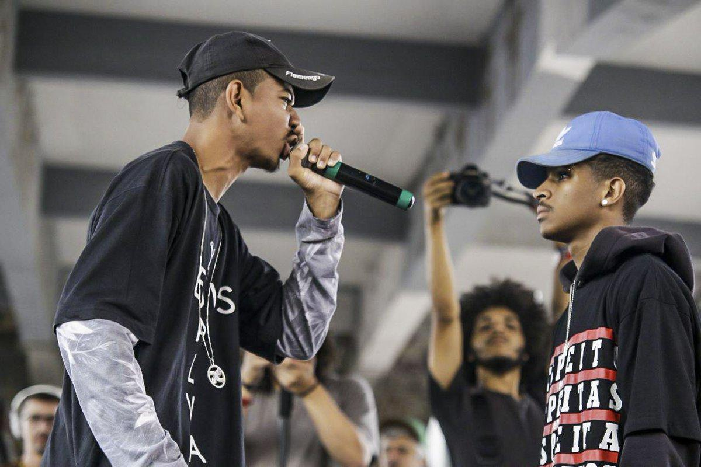
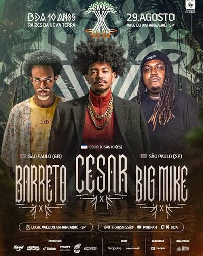

Os títulos e o auge de César MC nas batalhas de rima
A trajetória de César MC nas batalhas de rima começou a ganhar grande destaque no Espírito Santo e rapidamente alcançou o cenário nacional. Em 2016, ele participou do Duelo de MCs Nacional, chegando às quartas de final. Apesar da derrota, a experiência serviu para aumentar sua motivação e fez com que ele passasse a disputar batalhas em diferentes estados.

Em 2017, César voltou ao Nacional depois de vencer a seletiva do Espírito Santo. Na competição nacional, enfrentou MCs de diferentes estados e avançou até conquistar o título de campeão do Duelo de MCs Nacional de 2017, tornando-se um dos grandes nomes do freestyle brasileiro.
No mesmo período, César também começou a construir sua história na Batalha da Aldeia (BDA). Ele foi campeão da BDA 1 Ano, formando trio com Dudu MC e Araps. No ano seguinte, voltou a conquistar o título, dessa vez na BDA 2 Anos, ao lado de Dudu MC e Noventa. Com essas duas conquistas, César se tornou um dos maiores vencedores das edições de aniversário da BDA.
Além dos títulos nacionais e da BDA, César também conquistou dois títulos estaduais, completando um currículo de destaque dentro das batalhas. Dessa forma, seu auge nas batalhas aconteceu justamente nesse período entre 2017 e 2018, quando conseguiu reunir conquistas nacionais, estaduais e títulos importantes na Batalha da Aldeia.
Depois de 2018, César passou a dedicar mais atenção à sua carreira musical, levando para suas músicas a mesma força narrativa que apresentava nas batalhas. Foi nesse período que sua carreira como artista ganhou ainda mais projeção, com trabalhos como “Minha Última Letra” e, posteriormente, “Canção Infantil”.
O retorno à BDA 10 Anos

Depois de aproximadamente oito anos afastado das batalhas oficiais, César MC foi anunciado em agosto de 2026 como participante da BDA 10 Anos. O retorno acontece justamente na competição que ajudou a construir sua história no freestyle.
Na edição de 10 anos, César formará um trio com Barreto e Big Mike, reunindo três nomes importantes de diferentes gerações do freestyle. O evento está marcado para 29 de agosto de 2026, no Vale do Anhangabaú, em São Paulo.
Esse retorno tem um significado especial porque César não volta como um MC que está começando novamente: ele retorna à BDA como um dos nomes históricos da competição, carregando dois títulos de aniversário, dois títulos na Aldeia e um título nacional. É, portanto, um reencontro entre o artista que se tornou conhecido nas batalhas e o palco onde parte importante de sua história foi construída.